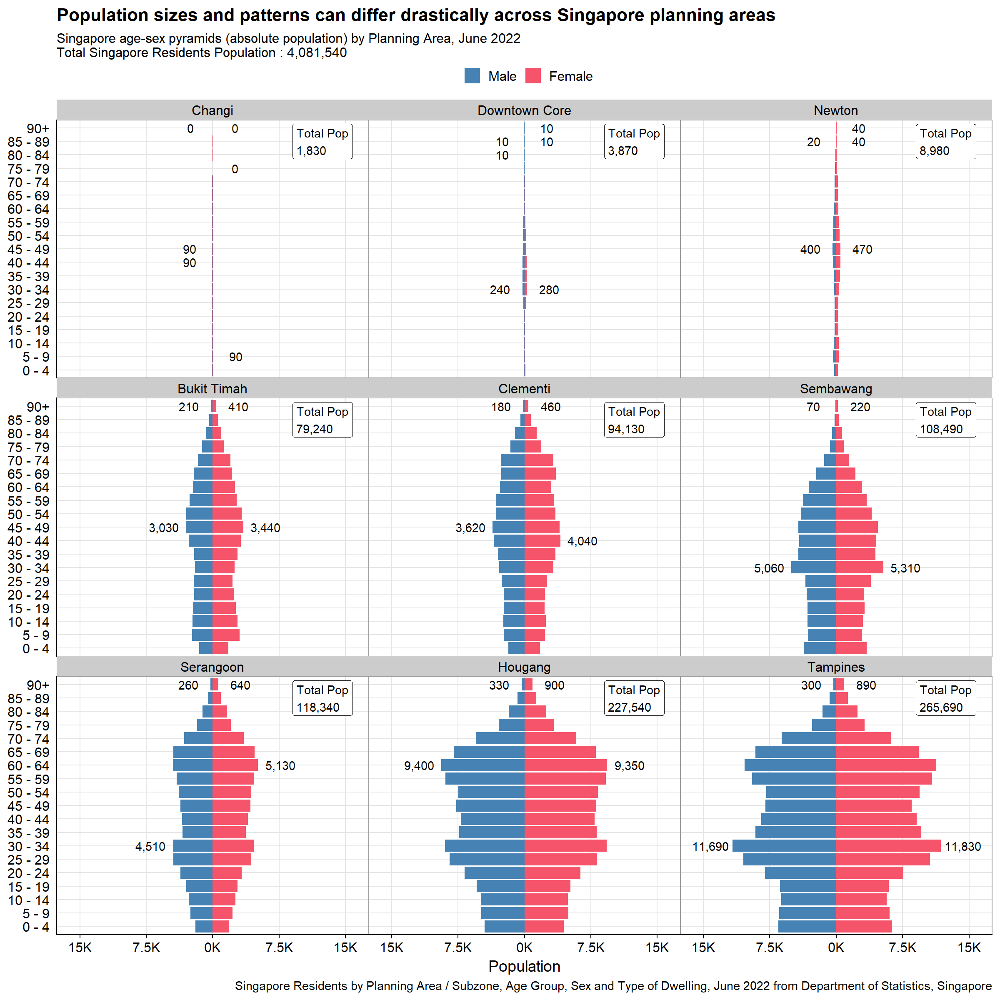
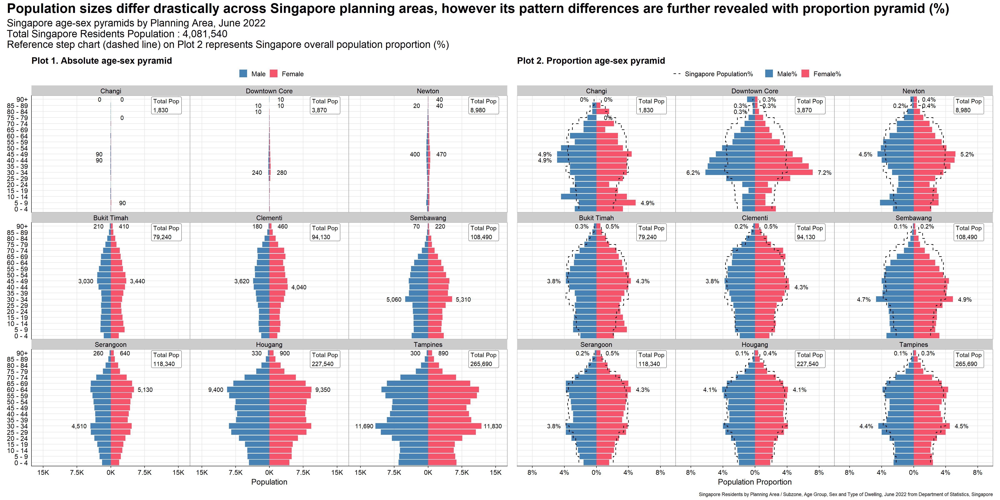

Show the code
#Load packages
pacman::p_load(cowplot, scales, patchwork, tidyverse)
#Import data
sgpop <- read_csv("data/respopagesextod2022.csv", show_col_types = FALSE)Peer critique and viz makeover of age-sex pyramid design.
Michael Djohan
January 23, 2023
February 2, 2023
This exercise aims to provide critique and improvements to age-sex (population) pyramid created by peer in Take-home Exercise 1 using Tableau. This will be done based on clarity and aesthetics. The original design will then be remade using data visualization design principles and best practices using ggplot2, its extensions, and tidyverse packages.
The original dataset was downloaded from Department of Statistics, Singapore, titled Singapore Residents by Planning Area / Subzone, Age Group, Sex and Type of Dwelling, June 2022.
The file downloaded was respopagesextod2022.csv.
Figure 1 below shows the original design of the Singapore population pyramid by Planning Area in June 2022.
The link to the actual dashboard can be accessed here.
While Tableau displays dynamic chart, the lack of x-axis in the plot makes it difficult to gauge the male and female population. This also potentially misleads audience as it wrongly presents different planning areas having comparable population size (i.e., population size of Downtown Core is much smaller than Tampines, but the length of the bars show that they are similar). This is because the scales of x-axis for different pyramids (in different planning areas) are inconsistent.
Lack of legend, making it difficult to determine which side represents Male or Female population. Note that traditionally, the Male population is on the left side of the pyramids, hence initially creating confusion between color and position without legend.
The title is descriptive, but not specific. For instance, it does not tell the audience which period was this from. Additionally, it does not tell the audience the context of the visualization (i.e., main highlight, story, etc). A well-worded title and subtitle should help here.
The original data age group binning (5 years) was kept. This is good as it keeps the resolution, grouping this to lower resolution (i.e., 10 years) might lead to detail loss. However, this leads to audience having to scroll down on each individual pyramid, making it difficult to observe patterns from quick glance.
Lack of references for audience to compare across different facets, having relevant data labels or reference line would improve readability.
The presence of grid lines without x-axis is meaningless as there is no reference point.
The order of the planning areas in the trellis chart is not meaningful.
Lack of caption to present the source of data.
Good color choices representing Male and Female population, making it easy to read.
Clear planning area labels for each population pyramid.
Uniform white background gives a clean look.
Soft grid lines are not distracting.
Y-axis labels are not very easy to read due to presence of ‘_’.
From the original visualization, it seems that the original author intends to contrast different population sizes and patterns across Singapore planning areas. This might be the reason for presenting low populated area like “Downtown Core” and highly populated area like “Tampines” together. One way to do this is to plot the absolute pyramids (based on actual population) of the original planning areas, ordered based on population sizes. Rough sketch of proposed design is shown below.
Another angle of visualizing age-sex pyramids is by plotting the proportion pyramids (based on proportion% of population). This will highlight the population patterns better without being influenced by the population size. With this, we could also add reference chart based on Singapore overall population proportion %. It is also important to have data labels highlighting the population of each planning area to still highlight the differences in population sizes.
Launch R packages and import data from csv using readr::read_csv().
The packages installed are tidyverse, cowplot and scales. While tidyverse contains all useful R packages used for cleaning data and plotting graph, cowplot is ggplot2 extension, providing professional-looking figure. scales helps to add comma and/or percentage for labels display. patchwork is used to combine the two visualizations. All packages can be found within CRAN.
Group the original data by planning area (PA), age group (AG), and gender (Sex) using dplyr::group_by() and dplyr::summarise(), deriving new variable called sum_pop, which is the sum of population grouped by the three variables mentioned. dplyr::ungroup() is used to avoid further complications.
Convert Males population to negative to reverse the bar chart axis using dplyr::mutate() and ifelse.
Eliminate the ‘_’, ‘to’, ‘and over’ in age group (AG) using dplyr::mutate() and gsub().
Derive variables min_pop and max_pop to determine the min and max male & female population values for each planning area (PA) across age group (AG). This will be used in conjunction with signal below for data labeling purpose.
Derive new variables to calculate population proportion : sum of population by PA (sum_pop_pa), sum of population by age and sex (sum_pop_total), sum of total Singapore population (sum_pop_total_sg)
Using left_join() to create new clean tibble called sgpop_clean which will be used as final dataset for plotting
#Data Cleaning
#sgpop_group groups total population by PA, AG, and Sex to create base data for population pyramid
sgpop_group <- sgpop |>
mutate(AG = gsub('_to_',' - ', AG),
AG = gsub('_and_over', '+', AG),
Pop = ifelse(Sex == "Males", Pop*(-1), Pop)) |>
group_by(PA, AG, Sex) |>
summarise(sum_pop = sum(Pop)) |>
ungroup()
#sgpop_max_min creates summary parameters for max, min, and sum by grouping them on PA and Sex. AG is not included since we want to find total population across age group
sgpop_max_min <- sgpop_group |>
group_by(PA, Sex) |>
summarise(max_pop = max(abs(sum_pop)),
min_pop = min(abs(sum_pop))) |>
ungroup()
#sgpop_sum sums up the total population by planning area. This will be used to create proportion population per planning area
sgpop_sum <- sgpop_group |>
group_by (PA) |>
summarise(sum_pop_pa = sum(abs(sum_pop))) |>
ungroup()
#sgpop_total groups total population by AG and Sex to create base data for total Singapore population (across different PA)
sgpop_total <- sgpop |>
mutate(AG = gsub('_to_',' - ', AG),
AG = gsub('_and_over', '+', AG),
Pop = ifelse(Sex == "Males", Pop*(-1), Pop)) |>
group_by(AG, Sex) |>
summarise(sum_pop_total = sum(Pop)) |>
ungroup()
#sgpop_total_summ sums total Singapore population. This will be used to create Singapore proportion population for reference
sgpop_total_summ <- sgpop_total |>
group_by (Sex) |>
summarise(sum_pop_total_ag = sum(sum_pop_total)) |>
mutate(sum_pop_total_sg = sum(abs(sum_pop_total_ag))) |>
ungroup()
#joining multiple tibbles to create final sgpop_clean
sgpop_draft1 = sgpop_group |>
left_join(sgpop_max_min, by = c('PA'='PA', 'Sex' = 'Sex'))
sgpop_draft2 = sgpop_draft1 |>
left_join(sgpop_sum, by = c('PA' = 'PA'))
sgpop_draft3 = sgpop_draft2 |>
left_join(sgpop_total, by = c('AG' = 'AG', 'Sex' = 'Sex'))
sgpop_clean = sgpop_draft3 |>
left_join(sgpop_total_summ, by = 'Sex')sgpop_cleanDerive new variables to calculate proportion of population for the second plot. There are two proportions:
prop_pop which calculates proportion of population by age and sex in a given planning area
prop_pop_total which calculates proportion of population by age and sex for the entire Singapore. This is required to create the reference chart
Derive signal variable from min_pop and max_pop to help to position data labels in min/max values on the respective Males and Females charts. case_when is used to assign the values of -1, 1, 0 for max/min Males, max/min Females, and others respectively.
Variable Sex and AG needs to be ordered to ensure that it appears as intended when plotting. As such forcats::fct_relevel() is used to order them manually.
#adding new variables:
#signal is used to display labels for min and max values in population pyramid
#prop_pop is proportion population per planning area
#prop_pop_total is proportion population of Singapore
sgpop_clean <- sgpop_clean |>
mutate(signal = case_when((min_pop == abs(sum_pop) | max_pop == abs(sum_pop)) &
Sex == "Males" ~ -1,
(min_pop == abs(sum_pop) | max_pop == abs(sum_pop)) &
Sex == "Females" ~ 1,
TRUE~0),
prop_pop = round(sum_pop/sum_pop_pa*100, 1),
prop_pop_total = abs(round(sum_pop_total/sum_pop_total_sg*100, 1))
)
#Order factors
sgpop_clean$Sex <- fct_relevel(sgpop_clean$Sex, "Males")
sgpop_clean$AG <- fct_relevel(sgpop_clean$AG, "0 - 4", "5 - 9")Functions are used to plot the charts to give flexibility to user(s) to input their selected 9 planning areas, ordered by their preference. In this case, however, we will use the original 9 planning areas in the original design.
Variable PA needs to be ordered to ensure that it appears as intended when plotting the trellis chart. As such forcats::fct_reorder() is used to order them by population size (sum_pop_pa).
ggplot2::geom_col() to plot the pyramids. This is used instead of ggplot2::geom_bar() as we are plotting the values in the data instead of frequency of occurrence.
Adding labels on min and max values is achieved using ggplot2::geom_text(). The variable signal is used here to determine whether the labels appear or not. The signal is multiplied by certain value to give certain distance from the end of the bar.
Only for second plot, ggplot2::geom_step() is used to create the dashed reference line representing Singapore overall population proportion (%).
Customise legend and color using ggplot2::scale_fill_manual().
Customise x-axis (population) scales using ggplot2::scale_y_continuous(). Note that we are not using ggplot2::scale_x_continuous() as we used ggplot2::coord_flip() before. Reason for this is because ggplot2::geom_step() is unable to plot categorical variables in y-axis.
To customise the title, subtitle, and caption, ggplot2::labs() is used.
Trellis plot is created using ggplot2::facet_wrap(). Note that we are not using ggplot2::facet_grid() as we are creating the facets using one variable - PA.
Labels for “Total Population” for each planning area is created using ggplot2::geom_label() to add nice border around the text.
cowplot::theme_cowplot() is used to create more clean and professional look. Other theme adjustments utilise ggplot2::theme().
plot_PA_pop is created to plot age-sex pyramids based on absolute population. This takes argument of vector of strings of the planning areas.#Setting the axis range and limits
pop_range_breaks = seq(-15000,15000,7500)
pop_range_limits = c(-16000, 16000)
#Create function to plot based on absolute population
plot_PA_pop <- function(planning_area) {
sgpop_clean$PA <- fct_reorder(sgpop_clean$PA, sgpop_clean$sum_pop_pa)
ggplot(data = sgpop_clean |>
filter(PA %in% planning_area)) +
#creating bar charts
geom_col(aes(x = AG,
y = sum_pop,
fill = Sex)) +
#adding labels on min and max values
geom_text(
data = sgpop_clean |> filter(PA %in% planning_area & signal != 0),
aes(x = AG,
y = sum_pop+signal*2500,
label = comma(abs(sum_pop))
)) +
coord_flip() +
#adding legends and customize colors
scale_fill_manual(values = c("steelblue", "#f6546a"),
labels = c("Male", "Female"),
name = NULL) +
#scale axis
scale_y_continuous("Population",
limits = pop_range_limits,
breaks = pop_range_breaks,
labels = function(x){paste0(abs(x/1000),'K')}) +
#adding title, subtitle, and caption
labs(title = "Population sizes and patterns can differ drastically across Singapore planning areas",
subtitle = paste0("Singapore age-sex pyramids (absolute population) by Planning Area, June 2022\nTotal Singapore Residents Population : ",comma(sgpop_clean$sum_pop_total_sg)),
caption = "Singapore Residents by Planning Area / Subzone, Age Group, Sex and Type of Dwelling, June 2022 from Department of Statistics, Singapore") +
#create trellis plot and PA population label
facet_wrap(~PA) +
geom_label(
x = 18,
y = 9000,
aes(label = paste("Total Pop", comma(sum_pop_pa), sep = "\n")),
hjust = "left") +
#setting theme and aesthetics
cowplot::theme_cowplot() +
theme(axis.title.x = element_text(vjust = 0.5),
axis.title.y = element_blank(),
axis.ticks.y = element_blank(),
panel.grid.major.x = element_line(color = "grey90", linetype = "solid"),
panel.grid.major.y = element_line(color = "grey90", linetype = "solid"),
legend.position = 'top',
legend.justification = 'center',
panel.border = element_rect(color = "grey60", linetype = "solid", linewidth = 0.5),
panel.spacing.x = unit(0,"line"),
panel.spacing.y = unit(0,"line"))
}plot_PA_prop)#Setting the axis range and limits
pop_range_breaks_prop = seq(-8,8,4)
pop_range_limits_prop = c(-9, 9)
#Create function to plot based on population proportion
plot_PA_prop <- function(planning_area) {
sgpop_clean$PA <- fct_reorder(sgpop_clean$PA, sgpop_clean$sum_pop_pa)
ggplot(data = sgpop_clean |> filter(PA %in% planning_area),
aes(group = 1)) +
#creating bar charts
geom_col(aes(x = AG,
y = prop_pop,
fill = Sex)) +
#adding labels on min and max values
geom_text(
data = sgpop_clean |> filter(PA %in% planning_area & signal != 0),
aes(x = AG,
y = prop_pop+signal*1.5,
label = paste0(abs(prop_pop),'%')
)) +
#adding reference step chart
geom_step(data = sgpop_clean |> filter(PA %in% planning_area & Sex == "Males"),
aes(x = AG,
y = -prop_pop_total,
color ="singpopline"),
linetype = "dashed",
linewidth = 0.6) +
geom_step(data = sgpop_clean |> filter(PA %in% planning_area & Sex == "Females"),
aes(x = AG,
y = prop_pop_total,
color ="singpopline"),
linetype = "dashed",
linewidth = 0.6) +
coord_flip() +
#adding legends and customize colors
scale_fill_manual(values = c("steelblue", "#f6546a"),
labels = c("Male%", "Female%"),
name = NULL) +
scale_color_manual(values = ("singpopline" = "black"),
labels = ("singpopline" = "Singapore Population%"),
name = NULL) +
#scale axis
scale_y_continuous("Population Proportion",
limits = pop_range_limits_prop,
breaks = pop_range_breaks_prop,
labels = function(x){paste0(abs(x),'%')}) +
#adding title, subtitle, and caption
labs(title = "Different demographic patterns are revealed when population proportion (%) is used in the pyramid",
subtitle = paste0("Singapore age-sex pyramids (proportion population) by Planning Area, June 2022\nTotal Singapore Residents Population : ",comma(sgpop_clean$sum_pop_total_sg),"\nReference step chart (dashed line) represents Singapore overall population proportion (%)"),
caption = "Singapore Residents by Planning Area / Subzone, Age Group, Sex and Type of Dwelling, June 2022 from Department of Statistics, Singapore") +
#create trellis plot and PA population label
facet_wrap(~PA) +
geom_label(
x = 18,
y = 5,
aes(label = paste("Total Pop", comma(sum_pop_pa), sep = "\n")),
hjust = "left") +
#setting theme and aesthetics
cowplot::theme_cowplot() +
theme(axis.title.x = element_text(vjust = 0.5),
axis.title.y = element_blank(),
axis.ticks.y = element_blank(),
panel.grid.major.x = element_line(color = "grey90", linetype = "solid"),
panel.grid.major.y = element_line(color = "grey90", linetype = "solid"),
legend.position = 'top',
legend.justification = 'center',
panel.border = element_rect(color = "grey60", linetype = "solid", linewidth = 0.5),
panel.spacing.x = unit(0,"line"),
panel.spacing.y = unit(0,"line"))
}plot_PA_prop_bar)#Setting the axis range and limits
pop_range_breaks_prop = seq(-8,8,4)
pop_range_limits_prop = c(-9, 9)
#Create function to plot based on population proportion
plot_PA_prop_bar <- function(planning_area) {
sgpop_clean$PA <- fct_reorder(sgpop_clean$PA, sgpop_clean$sum_pop_pa)
ggplot(data = sgpop_clean |> filter(PA %in% planning_area),
aes(group = 1)) +
#creating bar charts
geom_col(aes(x = AG,
y = prop_pop,
fill = Sex)) +
#adding labels on min and max values
geom_text(
data = sgpop_clean |> filter(PA %in% planning_area & signal != 0),
aes(x = AG,
y = prop_pop+signal*1.5,
label = paste0(abs(prop_pop),'%')
)) +
#adding reference bar chart
geom_col(data = sgpop_clean |> filter(PA %in% planning_area & Sex == "Males"),
aes(x = AG,
y = -prop_pop_total,
fill ="singpop"),
alpha = 0.6) +
geom_col(data = sgpop_clean |> filter(PA %in% planning_area & Sex == "Females"),
aes(x = AG,
y = prop_pop_total,
fill ="singpop"),
alpha = 0.6) +
coord_flip() +
#adding legends and customize colors
scale_fill_manual(values = c("Males" = "steelblue", "Females" = "#f6546a", "singpop" = "grey60"),
breaks = c("singpop", "Males", "Females"),
labels = c("Males" = "Male%", "Females" = "Female%", "singpop" = "Singapore Population%"),
name = NULL) +
#scale axis
scale_y_continuous("Population Proportion",
limits = pop_range_limits_prop,
breaks = pop_range_breaks_prop,
labels = function(x){paste0(abs(x),'%')}) +
#adding title, subtitle, and caption
labs(title = "Different demographic patterns are revealed when population proportion (%) is used in the pyramid",
subtitle = paste0("Singapore age-sex pyramids (proportion population) by Planning Area, June 2022\nTotal Singapore Residents Population : ",comma(sgpop_clean$sum_pop_total_sg),"\nReference bar chart (transparent grey) represents Singapore overall population proportion (%)"),
caption = "Singapore Residents by Planning Area / Subzone, Age Group, Sex and Type of Dwelling, June 2022 from Department of Statistics, Singapore") +
#create trellis plot and PA population label
facet_wrap(~PA) +
geom_label(
x = 18,
y = 5,
aes(label = paste("Total Pop", comma(sum_pop_pa), sep = "\n")),
hjust = "left") +
#setting theme and aesthetics
cowplot::theme_cowplot() +
theme(axis.title.x = element_text(vjust = 0.5),
axis.title.y = element_blank(),
axis.ticks.y = element_blank(),
panel.grid.major.x = element_line(color = "grey90", linetype = "solid"),
panel.grid.major.y = element_line(color = "grey90", linetype = "solid"),
legend.position = 'top',
legend.justification = 'center',
panel.border = element_rect(color = "grey60", linetype = "solid", linewidth = 0.5),
panel.spacing.x = unit(0,"line"),
panel.spacing.y = unit(0,"line"))
}As mentioned above, the first plot contrasts different population sizes and patterns across Singapore planning areas. As such absolute age-sex pyramids are plotted in 3x3 trellis chart. The reason for choosing 3x3 is to fit the display in one screen webpage (using quarto). Having 9x1 or 1x9 will either require audience to scroll or squeeze the pyramids too closely together.

The second plot presents an alternative angle to the same planning areas, highlighting the population patterns better without being influenced by the population size. Reference chart based on Singapore overall population proportion % is added to allow audience to see how different planning areas population patterns differ from national proportion. Note that the reference chart is only possible to be added in the second plot as putting this in first plot will overshadow individual planning area pyramids. This is due to sheer size of Singapore population relative to each planning area. The two versions of the second plot is presented below.
Note that it is quite difficult to see the reference bar chart, especially for certain planning areas like Clementi or Hougang, in which there is large overlap with overall Singapore Population pyramid. As such it might make sense to use the step chart instead as the final visualization.
The final visualization is created using patchwork to stitch the two plots together. This will put the two trellis charts side-by-side, showcasing the different angles brought about by the two plots.
#Calling the function to plot proportion population pyramid by the nine planning areas selected by peer
final_plot <- p1 + p2a
final_plot + plot_annotation(
title = 'Population sizes differ drastically across Singapore planning areas, however its pattern differences are further revealed with proportion pyramid (%)',
subtitle = paste0("Singapore age-sex pyramids by Planning Area, June 2022\nTotal Singapore Residents Population : ",comma(sgpop_clean$sum_pop_total_sg),"\nReference step chart (dashed line) on Plot 2 represents Singapore overall population proportion (%)"),
caption = "Singapore Residents by Planning Area / Subzone, Age Group, Sex and Type of Dwelling, June 2022 from Department of Statistics, Singapore",
theme = theme(plot.title = element_text(face = "bold", size = 24),
plot.subtitle = element_text(size = 18))
)
Consistent scale of x-axis allows fair comparisons of population size and patterns across different planning areas. This is especially important since the population sizes for different planning areas differ greatly.
As ggplot2 plots a static chart, having grid lines are important for audience for referencing. In this case, both y and x-axis grid lines are kept to ease readability, allowing audience to refer even the furthest pyramid from the axis (top right pyramid).
Legend is provided and the “Male” bar chart is put to the left, allowing faster recognition.
The title describes the context of the visualization, which is to contrast population sizes and patterns across different planning areas. Subtitle also provides factual clarity of the plots with total population displayed as reference.
By adjusting the plot height, the solutions presented still keep the original resolution (5-year), without audience having to scroll down on each individual facet. This eases comparison among all pyramids in one view.
Only data labels for min and max population across age groups for each planning areas are provided. This gives reference for audience without overwhelming them with too much text labels.
Annotations on each facets highlighting the total population for different planning areas gives an anchor point for audience, further spotlighting the context (different population sizes) of visualization.
Reference chart of second plot adds another dimension of comparison for audience.
The planning area is ordered by population sizes, allowing audience to contrast the pyramid sizes per row (for the first plot)
Caption is provided to present the source of data.
Soft solid grid lines are not distracting.
Reference chart is in step chart to mimic the shape of population pyramids. It is also dashed to better distinguish from the grid lines. As discussed above, this offers better overall visualization than the transparent bar charts.
Tick-marks for y-axis (age group) are removed as they are superfluous for categorical variables.
The y-axis label “Age Group” is removed as the subtitle already describes it as age-sex pyramids.
This exercise resembles the first assignment closely, using the same data to visualize the trellis chart of age-sex pyramids. However it requires the students to use ggplot2, its extensions, and tidyverse packages instead of Tableau. It also adds another dimension of critique and makeover of peer works which helps to embed best practices in data visualization. The key takeaways are:
It is important to start by questioning the purpose and intent of the visualization. By understanding this, one can start experimenting and designing the apt visualization from different dimensions. One example would be the second plot produced in this exercise, looking at the age-sex pyramid from the population proportion (%) rather than absolute values.
There is no best visualization as there might be some trade-offs between clarity and aesthetics. Adding horizontal (y-axis) grid lines in this chart presented me with a dilemma as it reduces aesthetics (by cluttering the plots), but adds additional clarity, assisting the audience to refer to the age group. This is particularly important for static visualization like this.
Learning to critique other peer’s works help to identify pain points, to understand best practices, and to awaken new ideas that were not surfaced during Take-home Exercise 1.